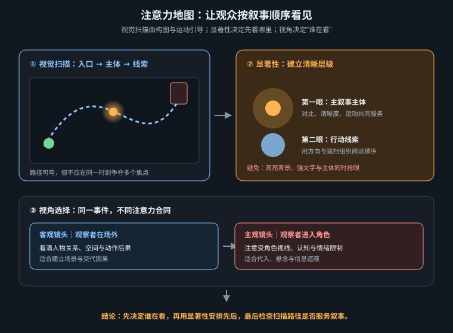

镜头语言不是焦距名词表，而是用显著性、视点与信息差编排注意力的系统

观众面对一帧画面，会先被显著性吸引，再寻找叙事意义。高明度或高色差、清晰边缘、人脸与眼睛、运动起点、独立轮廓和文字都可能争夺首次注视；构图、光、景深和运动的任务，就是让这些线索形成优先级。所谓“视觉焦点”不是把主体放亮那么简单，而是主体相对于周围拥有最大的有效差异。
注意力还具有时间性。静态首帧决定观众先看哪里；运动中的新变化会触发重新定向；剪辑则强制注意力在两个画面间跳转。若每个区域同时闪烁、每个角色都移动、背景拥有最亮高光，观众不是获得更多信息，而是无法判断什么重要。动态叙事要管理的是每一秒允许哪个信息赢。
| 注意线索 | 机制 | 可控手段 | 误用后果 |
|---|---|---|---|
| 明暗/色差 | 局部差异越大越先被发现 | 局部主光、冷暖分离、压低背景 | 全局 HDR 与霓虹让所有区域同权 |
| 清晰度 | 清楚区域更像可行动信息 | 焦点、景深、雾、纹理密度 | 过浅景深抹掉必要空间线索 |
| 人脸/视线 | 观众会跟随人物看向 | 眼神方向、头部姿态、视线匹配 | 角色看错边，下一镜对象失联 |
| 运动 | 变化边缘触发重新定向 | 延迟动作、单点启动、运动对比 | 全画面粒子与抖动制造噪声 |
| 轮廓/隔离 | 独立形状更易被分组 | 负空间、轮廓光、遮挡层级 | 切线粘连，主体与背景合并 |
| 声音 | 可在画外预告下一注视点 | 声桥、方向声、短暂静默 | 声音与画面同时轰炸，缺少层级 |
把画面缩到 160 像素宽、转成灰度并眯眼看：第一眼是否仍落在叙事主体？若答案是否定的，先修明度分组、轮廓与运动，不要继续添加细节。构图法则只是组织手段，注意顺序才是结果。
这四步可组成最小注意曲线：先看岚的背影，听到画外脉冲后看向舷窗右侧，行星从遮挡外出现，最后切回眼部反应。若一开始就在舷窗中放一个巨大明亮行星，后面的“揭示”无论运镜多华丽都已经失效，因为信息在首帧被消费了。
客观镜头把摄影机放在事件之外，观众看着角色行动；它擅长交代空间、关系和行为证据。主观镜头 POV把摄影机放在角色眼睛的位置，观众只获得角色此刻能看见的信息；它擅长沉浸、限制知识和制造身体风险。两者之间还有半主观镜头：过肩、贴背跟随、贴近角色高度的侧面镜头。观众仍看得见角色的一部分，却被拉进其知觉范围。
| 视点 | 观众位置 | 最适合 | 必须给的身体证据 | 主要风险 |
|---|---|---|---|---|
| 客观 | 旁观者 | 建立空间、显示角色不知道的信息、比较关系 | 不要求 | 距离过远，情绪只靠音乐硬推 |
| 半主观 | 贴近角色但未成为角色 | 过肩揭示、跟随探索、保留身份锚点 | 肩、头部轮廓或身体边缘 | 肩膀变形、左右锚点镜像 |
| 主观 POV | 角色眼睛 | 发现、威胁、操作、眩晕、隐藏面孔 | 手、呼吸、遮挡、视线高度或身体运动 | 退化成无人称风景或游戏截图 |
| 伪主观 | 物体/监控/瞄具 | 机械观察、证据、异化 | 界面边框、镜头缺陷、固定机位逻辑 | 伪文字、无功能 HUD、审美滤镜化 |
POV 不是在提示词前加一个 POV shot。如果画面没有角色身体的局部、眼睛高度、呼吸造成的轻微位移、遮挡或受限视野，模型很可能给出一张普通广角风景。反之，手入画也不自动等于主观：若摄影机从第三者角度看着那只手，仍是客观插入特写。
主观性来自信息受限与身体在场，不是随机抖动。过度摇晃会破坏视觉锚点、压低可读性，并给视频模型制造几何重构压力。更有效的身体感是小幅呼吸起伏、脚步造成的周期位移、手扶边缘、视线停顿，以及与头部转动一致的单次缓慢摇移。
经典三镜结构并不陈旧，因为它对应认知顺序：角色看向某处 → 观众获得其所见 → 回到角色理解意义。第一镜建立视线向量，第二镜定义对象与主观体验，第三镜给情绪解释。可以省略其中一镜，但要知道省略改变了什么：不回反应镜，信息保持开放；先给对象再给角色，观众领先角色，产生期待或悬念；只给反应不展示对象，则制造好奇。
| 排序 | 信息关系 | 观众体验 | 适用情境 |
|---|---|---|---|
| 看 → 所看 → 反应 | 角色与观众同步 | 共鸣、确认 | 发现家园、重逢、奇观 |
| 所看 → 角色尚未知 | 观众领先 | 悬念、等待 | 威胁靠近、炸弹倒计时 |
| 反应 → 延迟所看 | 角色领先 | 好奇、焦虑 | 恐怖、误导、喜剧揭包袱 |
| 只给 POV | 观众被限制在角色知识内 | 沉浸、不确定 | 探索、追逐、受困 |
S05 · 半主观过肩 · 5s · 揭示 FIRST FOCUS: 岚的左侧背影与右肩银扣，位于画面左三分。 ATTENTION TRANSFER: 1.5 秒后脉冲声停止，蓝色行星从舷窗画右进入； 岚只抬下巴，镜头缓推 8%。行星到右上三分交点后稳定。 CUT OUT: 岚仍看向画右；以蓝色亮度匹配切入 S06。 S06 · 主观 POV · 3s · 体验 POV from Lan's eye level inside the cockpit, her two hands resting motionless on the lower edge of the viewport, right glove carrying the silver clasp motif; the blue planet occupies the upper-right third, not center; faint cockpit glass reflection and one slow breathing rise, otherwise locked camera; no HUD, no text, no third-person body, no random shake, no zoom. The planet and star field remain geometrically stable. Sound narrows to breath and a distant hull hum. S07 · 客观眼部特写 · 3s · 意义 Extreme close-up of Lan's right eye, gaze held screen-right; the planet is not literally drawn as a perfect miniature in the iris—only a soft blue catchlight and moist lower eyelid. Almost static. After 1.8 seconds she exhales once. CUT OUT: 音乐在呼气时进入，接全景收束。 GROUP FAIL IF: S05 首帧提前出现行星；三镜中视线方向翻转；POV 没有手或眼睛高度证据； S06 变成游戏 HUD；S07 出现不合物理的完整行星贴图；三镜都在移动； 蓝色焦点同时出现在多个位置；反应早于揭示完成。
S05 让观众“跟着她看”，S06 让观众“成为她看”，S07 再让观众“看见这件事对她意味着什么”。三镜使用不同立场，却共享画右视线、蓝色注意焦点和声音递进，因此不会像随机视角拼贴。
多焦点竞争来自亮窗、人脸、字幕和粒子同时抢眼；首帧泄底让本应延迟的信息提前出现；运镜代替视线，摄影机四处巡视却没有角色或声音提供动机；POV 无身体使主观镜头退化成普通景观；反应镜头过度表演用流泪、张嘴、摇头同时解释情绪；视线不匹配让角色看画右、对象却从画左离开，观众感到空间断裂；背景持续运动则把注意从叙事主体拖向纹理噪声。
修复顺序应从信息层级开始，而不是加更多风格词：先决定本秒唯一焦点，再压低竞争区的明度、清晰度和运动；随后检查视线与声音是否提供转移路径；最后才调整焦距、颗粒、炫光等表面风格。
镜头语言的底层不是“多会用镜头”，而是精确分配观众的知觉权限：先让他看见什么，再让他从谁的位置看见，最后何时理解其意义。下一章将进入更具体的画面尺度，用景别、构图与景深继续塑造这条注意路径。